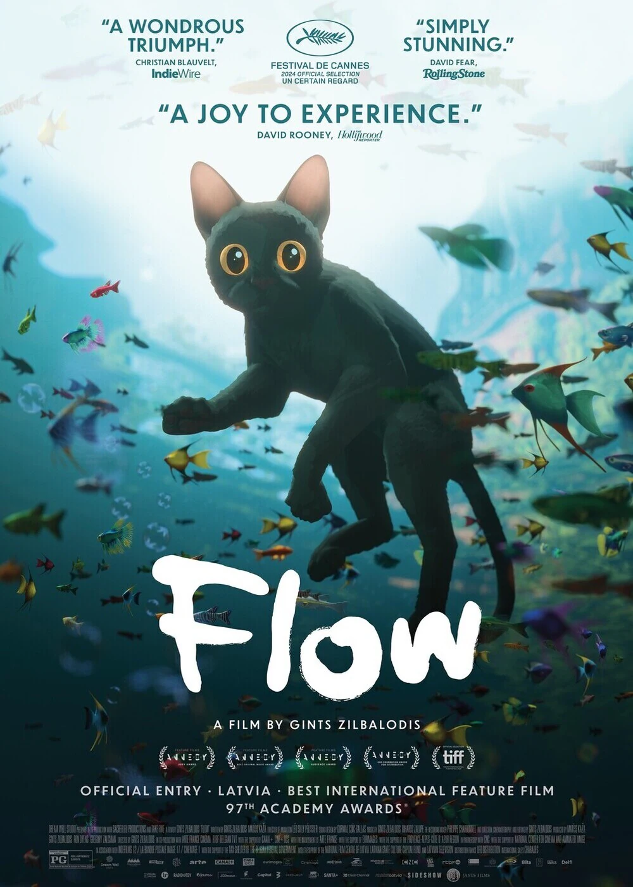

STORY 01 / FRIENDSHIP & TRUST
FLOW
Beyond the Flood.

ABOUT THE FILM
A Journey Without Words.
Flow is an animated adventure film about a black cat trying to survive in a world devastated by a massive flood.
Along the journey, the cat encounters different animals. Despite their differences, they slowly learn to trust one another, cooperate, and face challenges together.
A MOMENT THAT MATTERS

The Black Cat and Its Companions
The cat's journey with the other animals shows how trust and friendship can grow even between individuals who are different.
This reminds me that we do not need to be alike to understand and support one another.
WHAT I LEARNED
Friendship, Trust, and Teamwork.
Flow taught me that friendship is not about finding people who are exactly like us. It is about accepting differences, building trust, and helping one another through difficult situations.